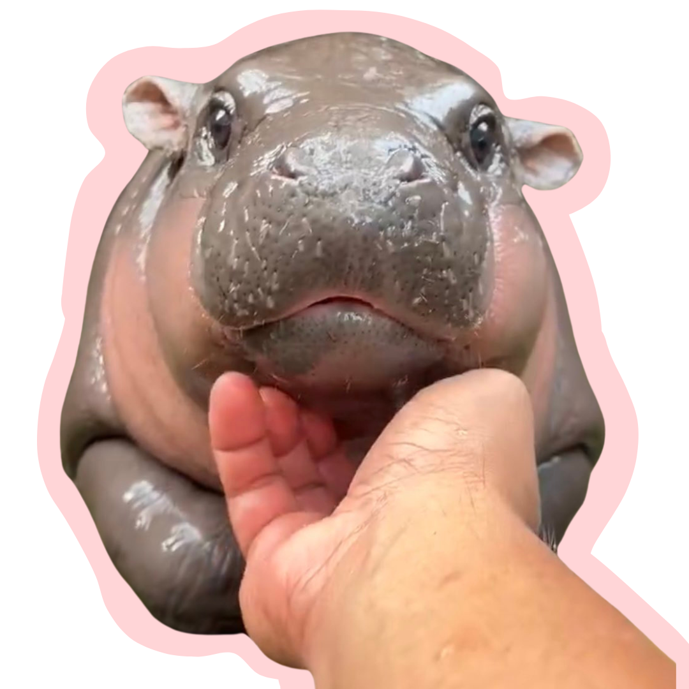

this is moo deng!
swipe to learn more about this trending hippo
⬇
swipe to learn more about this trending hippo
⬇
moo deng, a charming baby pygmy hippopotamus from thailand, gained immense popularity after her adorable videos went viral. her playful antics and sassy demeanor while interacting with zoo staff made her an instant sensation.
moo deng has quickly become a viral sensation, capturing hearts with her adorable antics. numerous companies have seized the opportunity to use her image in humorous memes to promote their brands, including our own university of miami. her popularity has even extended beyond social media, with features in renowned publications like the new york times, forbes, and people.
created by moo deng enthusiast: noa aviles